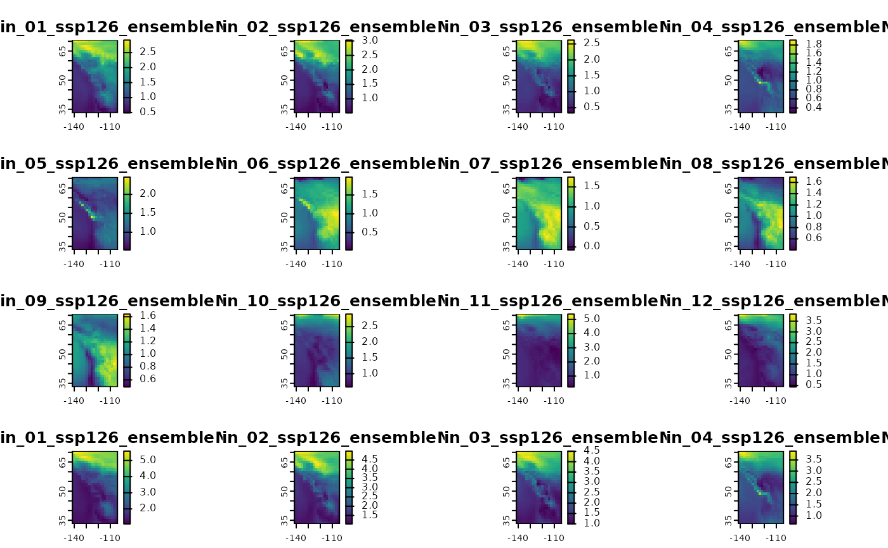

Retrieve global climate model anomalies for downscale_core.
gcms-input-data.Rdinput_gcms retrieves anomalies of 20-year periods for selected GCMs, SSPs,
periods and runs.
input_gcm_hist creates GCM time series inputs for the historical scenario (1850-2014), given chosen GCMs,
years and runs.
input_gcm_ssp creates future GCM time series inputs, given chosen GCMs, SSPs,
years and runs.
Usage
input_gcms(
bbox = NULL,
gcms = list_gcms(),
ssps = list_ssps(),
period = list_gcm_periods(),
max_run = 0L,
ensemble_mean = TRUE,
cache = TRUE,
run_nm = NULL
)
input_gcms_db(
gcms = list_gcms(),
ssps = list_ssps(),
period = list_gcm_periods(),
max_run = 0L,
ensemble_mean = TRUE,
run_nm = NULL
)
input_gcm_hist(
bbox = NULL,
gcms = list_gcms(),
years = 1901:2014,
max_run = 0L,
ensemble_mean = TRUE,
cache = TRUE,
run_nm = NULL
)
input_gcm_hist_db(
gcms = list_gcms(),
years = 1901:2014,
max_run = 0L,
ensemble_mean = TRUE,
run_nm = NULL
)
input_gcm_ssp(
bbox = NULL,
gcms = list_gcms(),
ssps = list_ssps(),
years = 2020:2030,
max_run = 0L,
ensemble_mean = TRUE,
cache = TRUE,
run_nm = NULL,
fast = TRUE
)
input_gcm_ssp_db(
gcms = list_gcms(),
ssps = list_ssps(),
years = 2020:2030,
max_run = 0L,
ensemble_mean = TRUE,
run_nm = NULL
)Arguments
- bbox
numeric. Vector of length 4 giving bounding box of study region, in the order ymax,ymin,xmax,xmin. In general this is created by
get_bb(), but can also be user-defined.- gcms
character. Vector of labels of the global circulation models to use. Can be obtained from
list_gcms(). Default to all GCMs available.- ssps
character. Vector of SSP-RCP scenarios (representative concentration pathways paired with shared socioeconomic pathways). Options are
list_ssps(). Defaults to all scenarios available.- period
character. Vector of labels of the periods to use. Can be obtained from
list_gcm_periods(). Defaults to all periods available.- max_run
integer. Maximum number of model runs to include, not including the ensemble mean. Runs are included in the order they are found in the models data until
max_runis reached. Defaults to 0L.- ensemble_mean
Logical. Return the mean of the individual GCM runs? If
ensemble_mean = TRUEandmax_run = 0, only the mean will be returned. To return an individual run and exclude the mean, setensemble_mean = FALSEandmax_run = 1.- cache
logical. Specifying whether to cache new data locally or no. Defaults to
TRUE.- run_nm
character.
NULLor length >= 1. Name of specified run(s) to return, instead of usingmax_run. Use thelist_runs_*()functions to list available runs.Defaults toNULL.- years
Numeric or character vector in
2020:2100. Defaults to2020:2030. Seelist_gcm_ssp_years()for available years.- fast
Logical. Should we use the faster method of downloading data from the database using arrays instead of Postgis rasters?
Value
A list of SpatRasters, each with possibly multiple layers, that can
be used with downscale_core().
A list of SpatRasters, each with possibly multiple layers, that can
be used with downscale_core().
A list of SpatRasters, each with possibly multiple layers, that can
be used with downscale_core().
Details
This function returns a list with one slot for each requested GCM. Rasters inside the list contain anomalies for all requested SSPs, runs, and periods.
In general this function should only be used in combination with downscale_core().
This function returns a list with one slot for each requested GCM. Rasters inside the list contain anomalies for all runs and years.
In general this function should only be used in combination with downscale_core().
This function returns a list with one slot for each requested GCM. Rasters inside the list contain anomalies for all SSPs, runs and years.
In general this function should only be used in combination with downscale_core(). Note that if you request multiple runs, multiple SSPs, and a lot of years,
it will take a while to download the data (there's lot of it).
Examples
library(terra)
xyz <- data.frame(lon = runif(10, -140, -106), lat = runif(10, 37, 61), elev = runif(10), id = 1:10)
## get bounding box based on input points
thebb <- get_bb(xyz)
gcms <- input_gcms(thebb, list_gcms()[1], list_ssps()[1])
#> Not fully cached :( Will download more
#> Downloading GCM anomalies
#> .
#> Caching data...
## show ensemble means only
lyrs <- grep("ensemble", names(gcms$`ACCESS-ESM1-5`))
plot(gcms$`ACCESS-ESM1-5`[[lyrs]])
